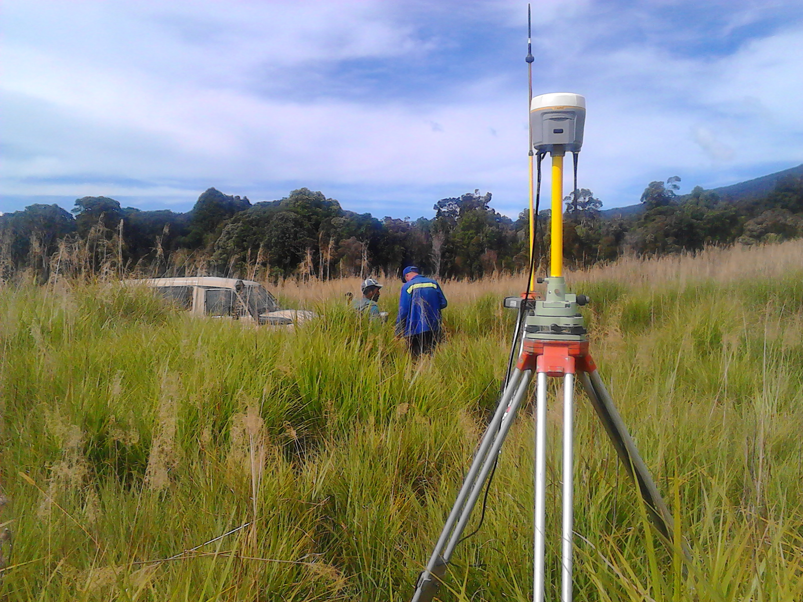
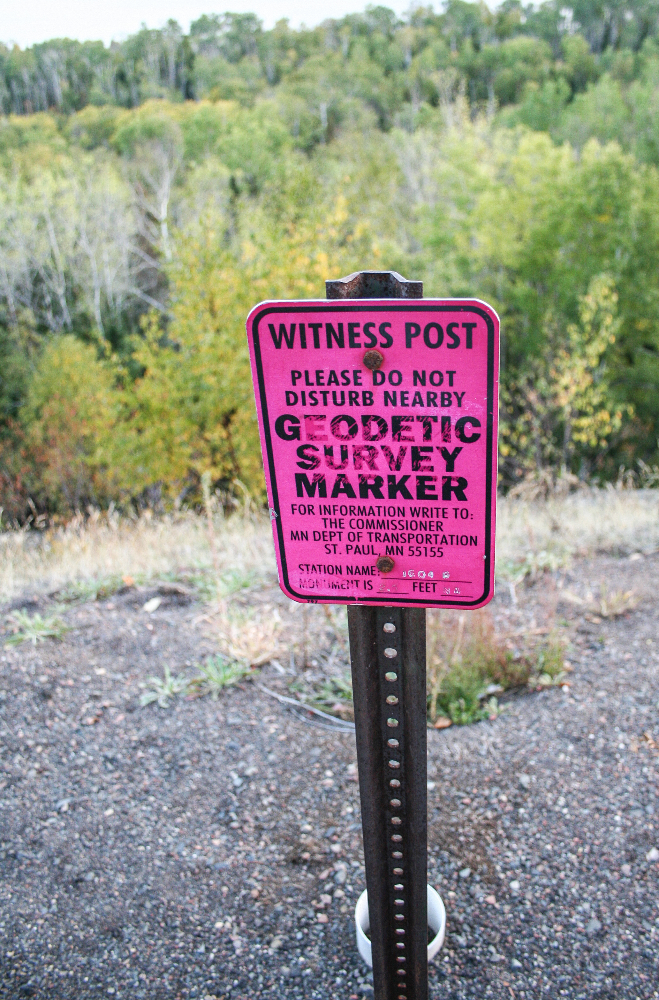
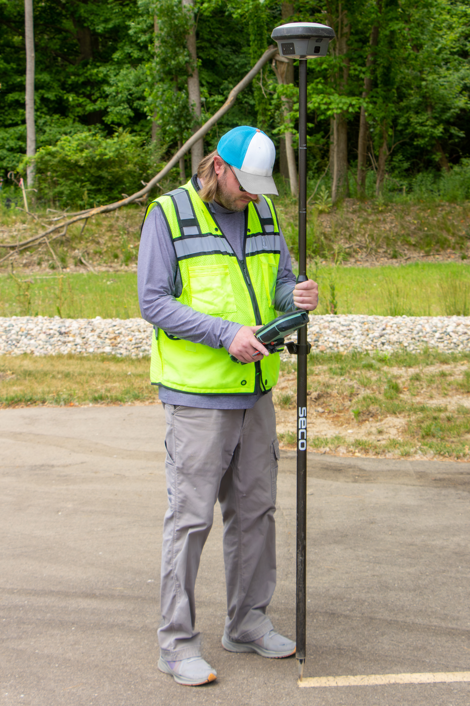

Contents
- The Surveyor's Role on a TxDOT Roadway Project
- Getting Data on the Existing State of the Roadway
- Project Control — Primary & Secondary Monuments
- Benchmarks & Vertical Control
- GNSS Positioning & OPUS
- GNSS Quality Metrics — PDOP and the DOP Family
- Trimble Equipment & Field Workflow
- Coordinate Systems & Datums for TxDOT Projects
- Quality Control & Common Pitfalls
- Glossary
- Index & Sources
The Surveyor's Role on a TxDOT Roadway Project
On a TxDOT roadway project, survey is the discipline that answers two questions everything else depends on: where does everything actually sit on the ground right now, and what stable, defensible reference points can design, ROW, and construction all measure from later? Every downstream discipline — geometric design, drainage, environmental, ROW acquisition, construction staking — inherits its coordinate framework from the survey crew's early work. An error baked into project control early on propagates into every plan sheet built on top of it.
Almost everything in this guide serves one of two deliverables: a topographic / existing-conditions dataset (what's physically there) and a control network (the fixed, recoverable coordinate and elevation reference the whole project is built against). Keep that distinction in mind — it's the organizing idea behind sections 2-4.
Getting Data on the Existing State of the Roadway
Before a designer can draw a single proposed line, the survey crew has to build an accurate, three-dimensional digital record of what's physically on the ground today — this is the existing conditions or topographic ("topo") survey. It becomes the basis for the existing ground surface (digital terrain model), and every design decision — pavement widening, drainage grades, utility conflicts, ROW takes — gets checked against it.

What Gets Collected
A TxDOT topo survey is broader than "the road" — it documents everything within the survey limits that could affect design, ROW, or utility coordination:
| Category | Typical features |
|---|---|
| Planimetrics | Pavement edges, shoulders, curbs, sidewalks, driveways, fences, buildings, tree lines |
| Vertical / drainage | Ground shots on a grid or breaklines, ditch flowlines, culvert inverts, headwalls, curb/gutter flowlines |
| Utilities (visible evidence) | Poles, guy wires, pedestals, manholes, valve covers, meters, overhead lines — surface evidence only unless a separate SUE (Subsurface Utility Engineering) effort is scoped |
| ROW evidence | Found monuments, fence lines, occupation lines — anything bearing on where the existing right-of-way and property boundaries actually are |
| Structures & signage | Bridge elements, retaining walls, guardrail, signs, signals, striping |
Field Methods
Most modern TxDOT topo work is collected with GNSS RTK rovers for open-sky areas and a robotic total station for anything under tree canopy, near structures, or close enough to traffic/overhead obstructions that satellite visibility or safety make GNSS impractical. The two methods are complementary, not competing — a well-run crew swaps between them within the same day depending on what a given feature needs.
A topo survey records what's visible at the surface (a manhole rim, a valve box). It is not a substitute for SUE when the project needs actual horizontal/vertical utility positions — those follow the ASCE 38 quality levels (D: records only, up through A: test-hole-verified). Confusing "we picked up the manhole" with "we know where the pipe is" is a recurring source of downstream utility conflicts.
Feature Coding & Deliverables
Points are collected with standardized feature codes (linework codes that tell the CAD software what to draw and how to connect points — e.g. auto-generating a continuous edge- of-pavement line from a string of coded shots) so the field data translates directly into usable CAD linework rather than a disconnected point cloud. The end deliverables feed the project's survey CAD file (TxDOT projects are typically built in MicroStation/OpenRoads Designer) and a DTM/TIN (digital terrain model / triangulated irregular network) representing the existing ground surface that the design surface will be compared and tied into.
Project Control — Primary & Secondary Monuments
Control is the skeleton the rest of the survey hangs on: a set of physically monumented points with known, highly accurate horizontal coordinates and/or elevations that every other measurement on the project — topo shots, design coordinates, construction stakeout — ties back to.
Control Network Hierarchy: Primary vs. Secondary
Primary control points are the few, high-accuracy points directly observed with static GNSS and post-processed (typically through OPUS — see section 5). Secondary control points densify that network — set more frequently along the corridor, close enough together that a robotic total station or conventional instrument always has usable backsight/foresight pairs, without needing a static GNSS session at every one.
Monumentation Types
| Monument type | Typical construction | Where used |
|---|---|---|
| Concrete monument | Poured concrete with a stamped bronze/aluminum disk set in the top | Primary control, permanent points expected to survive the life of the project and beyond |
| Capped rebar / iron rod | #4-#5 rebar driven flush or near-flush, capped with a stamped plastic or aluminum cap | Secondary control, ROW/boundary corners |
| Disk set in structure | Bronze/aluminum disk drilled and epoxied into existing concrete (curb, bridge, sidewalk) | Stable long-term reference where ground disturbance is likely (near construction limits) |
| PK nail / mag nail | Nail set in asphalt or concrete pavement | Temporary or short-duration secondary points, easily disturbed — used with that limitation understood |

Placement Criteria
- Stability — set in undisturbed ground or stable structure, outside the anticipated construction limits and clear zone, away from fill sections or pavement edges likely to move or settle.
- Spacing — primary control spaced to give static GNSS sessions clean sky visibility and reasonable baseline lengths; secondary control spaced tightly enough (commonly on the order of every 1,000-2,000 ft along a corridor, tighter on curves or complex interchanges) that every part of the survey/construction limits has usable line of sight to at least one point.
- Intervisibility — at least some secondary points need direct line of sight to each other as a backup for conventional (non-GNSS) instrument use, and as a check.
- Redundancy — never rely on a single tie; every point should be checkable from more than one other control point so a disturbed or blundered monument is caught rather than silently propagated.
Construction equipment, mowing crews, and time itself are the enemy of monumentation. Any crew returning to a project should always reconnoiter and check into known control before trusting it — a shifted or destroyed monument used without verification can silently corrupt every stake set from it.
Survey Control Monuments vs. ROW/Boundary Monuments
Survey control monuments exist purely as an engineering convenience — a recoverable coordinate/elevation reference for this project. They carry no legal weight. ROW and boundary monuments (found property corners, existing ROW markers) are legal evidence of where a boundary actually is, governed by boundary law and the retracement rules a licensed surveyor applies when re-establishing a property line. A topo crew records found ROW evidence faithfully but does not treat a project control point as if it carries boundary authority, and vice versa.
Benchmarks & Vertical Control
Horizontal control answers "where" — benchmarks answer "how high." A benchmark (BM) is a monument with a precisely known elevation, used as the starting and checking point for all vertical work on the project (existing ground elevations, drainage grades, construction grade stakes).
What Is a Benchmark?
TxDOT project benchmarks are typically split into two categories:
- Project benchmarks (PBM) — durable monuments (disks in concrete, structures) set specifically for the project, intended to survive from initial survey through construction.
- Temporary benchmarks (TBM) — set for shorter-term, localized use (a nail in a curb near a work area) where a durable monument isn't warranted, but a known elevation is still needed nearby.
Datums: NAVD88 and the Geoid
TxDOT vertical control is referenced to NAVD88 (North American Vertical Datum of 1988) — an orthometric height system, meaning elevations are referenced to a model of mean sea level (the geoid), not to the mathematical ellipsoid GNSS itself measures against.
H = h − N
Where H is orthometric height (NAVD88 elevation — what design and construction actually use), h is the ellipsoid height a GNSS receiver directly measures, and N is the geoid height (undulation) at that point, taken from a geoid model (currently GEOID18 in the continental US). A rover's data collector applies this correction automatically using the loaded geoid model — but the model has to be current and correct for the answer to be trustworthy.
Benchmark Placement Along the Corridor
Benchmarks are placed with the same stability logic as horizontal control — outside anticipated disturbance, on stable ground or structure — but with vertical-specific spacing: close enough together (commonly every few thousand feet, and always near structures/drainage features requiring precise grade) that a level run or GNSS check never has to carry error too far before the next check point.
Differential Leveling vs. GNSS-Derived Elevations
| Differential (spirit) leveling | GNSS-derived elevation | |
|---|---|---|
| Method | Optical level + rod, direct height differences between points | GNSS ellipsoid height minus geoid model separation |
| Typical accuracy | Sub-centimeter over short, well-run circuits | Centimeter-level under RTK; better under long static sessions |
| Strength | Highest achievable precision; independent of satellite geometry/geoid error | Fast, no intervisibility required, covers long distances efficiently |
| Weakness | Slow, requires intervisibility between setups, error accumulates over long runs if not looped/checked | Vertical accuracy is inherently worse than horizontal, and only as good as the local geoid model |
| Typical TxDOT use | Establishing/verifying primary benchmarks to the highest standard | Day-to-day topo and grade checks where GNSS accuracy is sufficient |
Satellite geometry gives GNSS receivers a naturally stronger fix on horizontal position than vertical — there's no satellite below the horizon to triangulate against from underneath. This is why VDOP is always worse than HDOP for the same constellation (see section 6), and why critical vertical control is still often verified by conventional leveling rather than GNSS alone.
GNSS Positioning & OPUS
Establishing primary control accurately means tying a project into the national reference frame — and the standard tool for doing that without a private reference-station network is OPUS, the National Geodetic Survey's free online processing service.
Observation Methods: Static, RTK, and PPK
| Method | How it works | Typical session length | Typical use |
|---|---|---|---|
| Static | Receiver logs raw carrier-phase data at a fixed point for later post-processing (e.g. via OPUS), no real-time correction needed | 1-4+ hours depending on required accuracy and baseline length | Establishing primary control monuments |
| RTK (Real-Time Kinematic) | Rover receives live correction data from a base station or network, computes a fixed-integer solution in real time | Seconds per point | Topo shots, secondary control, stakeout |
| PPK (Post-Processed Kinematic) | Like RTK but corrections are applied afterward in software rather than live in the field | Seconds per point (processed later) | Environments where a live radio/cell link is unreliable (dense canopy, remote areas) |
What Is OPUS?
OPUS (Online Positioning User Service), run by NOAA's National Geodetic Survey, takes raw static GNSS observation data uploaded by a user and computes a high-accuracy position by comparing it against the nationwide network of CORS (Continuously Operating Reference Stations). It's the standard way a project surveyor ties a new control monument into the National Spatial Reference System without needing their own base station tied to a known point.
OPUS Variants
| Variant | Best for | Notes |
|---|---|---|
| OPUS-Static (OPUS-S) | Single-point static observations, 2+ hours | The standard workhorse for establishing one control point at a time |
| OPUS-RS (Rapid Static) | Shorter sessions (15+ min) near a dense CORS network | Trades some accuracy/reliability for speed — not appropriate everywhere |
| OPUS-Projects | Multi-point, multi-session projects | Lets a whole project's control network be managed, adjusted, and shared as one dataset |
| OPUS-Share | Publishing a mark for public/community reference | Optional — contributes the mark to the publicly searchable database |
CORS — The Reference Network
CORS stations are permanently operating GNSS receivers at surveyed, known locations across the country, continuously logging data. OPUS works by differencing a user's raw observation against the nearest handful of CORS stations, which cancels out most atmospheric and satellite-clock error common to both — the same principle behind RTK base/rover corrections, just applied after the fact against a permanent national network instead of a project's own temporary base.
A longer observation window lets the satellite constellation's geometry change meaningfully over the session, which averages out geometry-dependent error that a short session would bake in as a systematic offset. This is why OPUS accuracy improves substantially between a 15-minute and a 4-hour session, well beyond what simple averaging of more data points alone would predict.
GNSS Quality Metrics — PDOP and the DOP Family
A GNSS fix is only as good as the geometry of the satellites it's computed from. Dilution of Precision (DOP) is the family of numbers that quantify how much that geometry is amplifying (or not) the underlying ranging error into positional error.
Dilution of Precision Explained
σposition ≈ DOP × σUERE
Final positional error is approximately the DOP value multiplied by the User Equivalent Range Error (UERE — the underlying per-satellite ranging error from atmospheric delay, clock error, multipath, etc.). A DOP of 2 roughly doubles the raw ranging error in the final fix; a DOP of 8 amplifies it eightfold. DOP is a multiplier, not an absolute accuracy figure on its own.
| Term | Stands for | What it describes |
|---|---|---|
| GDOP | Geometric DOP | Combined 3D position + receiver clock error — the broadest DOP figure |
| PDOP | Positional DOP | Combined 3D position error (horizontal + vertical) — the figure most commonly watched in the field |
| HDOP | Horizontal DOP | Horizontal (2D) position error only |
| VDOP | Vertical DOP | Vertical position error only — typically the weakest of the four, since no satellites are visible below the horizon |
| TDOP | Time DOP | Receiver clock error contribution — rarely watched directly in field work |
PDOP Quality Scale
| PDOP value | Rating | Field guidance |
|---|---|---|
| < 2 | Ideal | Excellent geometry — highest-confidence work |
| 2 – 4 | Excellent | Standard good working conditions for RTK/static |
| 4 – 6 | Good | Acceptable for most routine work |
| 6 – 8 | Moderate | Usable, but treat results with more caution; consider re-observing critical points |
| 8 – 10 | Fair | Marginal — increasing risk, avoid for control-quality work |
| > 10 | Poor | Unreliable — most receivers/collectors will flag or refuse a fixed solution |
Other Quality Indicators
- Fixed vs. float solution — a "fixed" RTK solution has resolved the carrier-phase integer ambiguity and delivers centimeter-level accuracy; a "float" solution hasn't fully resolved it and can be off by decimeters or more. Never accept a float solution for control-quality work.
- RMS (Root Mean Square) — the reported precision estimate for a given observation, shown by the receiver/data collector alongside HRMS (horizontal) and VRMS (vertical).
- Multipath — signal reflecting off nearby surfaces (pavement, structures, vehicles, water) before reaching the antenna, corrupting the ranging measurement independent of DOP. It's why shooting a point tight against a building or guardrail is riskier than one in open ground even at identical PDOP.
- Satellite count & elevation mask — more visible satellites generally improve geometry; an elevation mask (commonly 10-15°) excludes low-angle satellites whose signals travel through more atmosphere and are more prone to multipath and obstruction.
A receiver can report a "fixed" RTK solution even while PDOP is elevated — fixed/float status and DOP are separate signals. A fixed solution under tree canopy or next to a bridge abutment with PDOP pushing 6-8 deserves a second look (or a re-shoot in better conditions) before it's trusted for control-quality work, even though the data collector isn't throwing an outright error.
| Work type | Typical horizontal tolerance | Typical vertical tolerance |
|---|---|---|
| Primary control (OPUS static) | ≤ 1-2 cm | ≤ 2-4 cm |
| Secondary control (RTK, tied to primary) | ≤ 2-3 cm | ≤ 3-5 cm |
| Topographic mapping-grade shots | ≤ 3-5 cm | ≤ 5-8 cm |
Exact tolerances are governed by the project's controlling standards (TxDOT Survey Manual and project-specific scope) — the figures above are typical working orders of magnitude, not a substitute for the governing spec on a given job.
Trimble Equipment & Field Workflow
Trimble GNSS receivers are the most common field hardware on TxDOT survey crews, used both for RTK topo/stakeout work and for static observations destined for OPUS.
Receiver Types & RTK Base/Rover Setup
link

Correction Sources
| Source | How it works | Range / limits |
|---|---|---|
| UHF radio | Project's own base station broadcasts corrections directly to rovers on a licensed radio frequency | Several miles, line-of-sight/terrain dependent; no cellular coverage needed |
| Cellular / NTRIP | Rover pulls corrections over a cell data connection from a base or a network service | Unlimited range within cell coverage; fails in dead zones |
| VRS network (Virtual Reference Station) | A statewide/regional network of permanent stations computes a synthetic nearby "virtual" base for the rover | No project base station needed at all; requires cellular coverage and network subscription |
Trimble Access: Point Codes & Localization
Field data collector software (commonly Trimble Access) is where feature codes get assigned to each shot in real time, and where a critical setup step happens before any production work: localization (site calibration) — tying the receiver's raw global WGS84/ITRF solution to the project's local control network and coordinate system (Texas State Plane, project datum) so every point collected lands in the same system the design will be built in.
Without a localization tied to the project's own control monuments, a rover's coordinates are correct in a global sense but may not exactly match the project's adopted local control values — small residual differences between the global GNSS solution and locally-observed control are normal, and the localization computes a best-fit transformation (and reports residuals) rather than assuming a perfect match.
Horizontal & Vertical Precision in the Field — HRMS/VRMS
Every RTK shot in Trimble Access reports HRMS (horizontal RMS) and VRMS (vertical RMS) alongside the coordinates — the receiver's own real-time precision estimate for that specific shot. A crew watches these live, not just PDOP, since HRMS/ VRMS reflect the actual solution quality (including multipath and signal strength) rather than geometry alone.
The single most common blunder in GNSS fieldwork isn't a satellite problem at all — it's entering the wrong antenna height (or the wrong measurement method: vertical height to a reference mark vs. slant height to the edge of the ground plane) into the data collector. A rover held at a fixed, known pole height removes this risk entirely for rover work; for static/base setups where height is measured by hand, double-check and record the measurement method used, not just the number.
Static Sessions Tied Into OPUS
When a Trimble receiver is used to establish primary control rather than collect topo shots, it's set up in static mode directly over the monument on a tripod and fixed-height tripod adapter (removing pole-height error from the equation entirely), left logging raw observations for the session length the required accuracy demands, then the resulting data is exported and submitted to OPUS exactly as described in section 5.
Coordinate Systems & Datums for TxDOT Projects
Texas is large enough that a single flat coordinate projection would introduce unacceptable distortion statewide, so Texas State Plane is split into five zones, each minimizing distortion within its own region.
Texas State Plane Coordinate Zones
| Zone | General coverage |
|---|---|
| North (4201) | Panhandle and northernmost counties |
| North Central (4202) | Dallas-Fort Worth and north-central Texas |
| Central (4203) | Austin, San Antonio, and central Texas |
| South Central (4204) | Houston and the southeast-central corridor |
| South (4205) | Rio Grande Valley and southernmost counties |
Horizontal control is referenced to NAD83 (North American Datum of 1983, with periodic realizations/adjustments), the datum State Plane itself is built on, and vertical control to NAVD88 as covered in section 4.
Surface vs. Grid Coordinates — Combined Scale Factor
State Plane coordinates are grid coordinates — projected onto a flat mapping plane. A distance measured on the actual ground ("surface" or "ground" distance) differs slightly from the equivalent grid distance because of both the map projection's scale distortion and the elevation difference between the ground and the projection's reference ellipsoid.
Combined Scale Factor = Grid Scale Factor × Elevation (Sea-Level) Factor
Multiplying a ground distance by the combined scale factor converts it to grid distance, and dividing a grid distance by it recovers ground distance. TxDOT projects commonly define a project datum (a single average combined scale factor, or a surface adjustment) so field crews and designers can work directly in "surface" coordinates that read naturally against ground distances, while still being traceable back to true State Plane grid values.
Stakeout distances computed on grid coordinates but laid out on the ground with a steel tape or uncorrected total station (which measures true ground/surface distance) will be systematically off by the scale factor — small on a short shot, but accumulating over a long corridor. Always confirm which coordinate basis (surface or grid) a given dataset uses before mixing sources.
Quality Control & Common Pitfalls
Good GNSS/survey practice is less about any single measurement and more about never trusting a single measurement — every control-quality result should be independently checkable.
| Stage | Check |
|---|---|
| Before observing | Confirm current PDOP/satellite count for the planned window; check geoid model and coordinate system loaded in the data collector are current and correct for the project |
| On arrival at any existing control | Always observe and check into it before trusting it — never assume a prior crew's monument is undisturbed |
| During static sessions | Log session length, antenna height (and measurement method), and receiver/antenna model — all required for correct OPUS processing |
| During RTK work | Watch fixed/float status and HRMS/VRMS per shot, not just PDOP; re-shoot anything marginal |
| Closing out control | Every new point should be checked from at least one independent tie beyond the single observation that established it |
| Post-processing | Review the OPUS solution report's peak-to-peak error and observation count before adopting a coordinate as published control |
Deeper dive — why redundancy catches what a single "good-looking" solution can't
A fixed RTK solution or a clean-looking OPUS report can still be wrong in ways the receiver itself has no way to detect — a monument that shifted slightly since it was last observed, an antenna height typo that's internally consistent but simply wrong, or a rare multipath condition that happened to still resolve to a plausible (but incorrect) fixed solution. None of these trigger an error flag on their own. The only defense is structural: tie every point from more than one independent source, and treat any disagreement between them — however small — as a real signal to investigate rather than average away.
Glossary
| Term | Definition |
|---|---|
| ASCE 38 | ASCE/UESI/CI 38-22, Standard Guideline for Investigating and Documenting Existing Utilities — defines the utility quality levels D (records only) through A (test-hole verified). |
| Benchmark (BM) | A monument with a precisely known elevation, used as the vertical reference for a project. |
| Combined Scale Factor | The multiplier that converts between ground/surface distance and State Plane grid distance. |
| CORS | Continuously Operating Reference Station — a permanently operating GNSS receiver at a known location; the national network OPUS compares a submission against. |
| DTM / TIN | Digital Terrain Model / Triangulated Irregular Network — a 3D digital surface representing the ground, built from surveyed points. |
| Fixed solution | An RTK solution where the carrier-phase integer ambiguity has been resolved, giving centimeter-level accuracy. |
| Float solution | An RTK solution where the integer ambiguity has not been fully resolved — decimeter-level or worse; not control-quality. |
| GDOP | Geometric Dilution of Precision — the combined 3D position + receiver clock error DOP figure. |
| Geoid | A model of mean sea level used as the reference surface for orthometric (NAVD88) elevations. |
| GNSS | Global Navigation Satellite System — the umbrella term covering GPS, GLONASS, Galileo, BeiDou, etc. |
| HDOP | Horizontal Dilution of Precision. |
| HRMS / VRMS | Horizontal / Vertical Root Mean Square — a receiver's real-time precision estimate for a given shot. |
| Localization (site calibration) | Tying a GNSS receiver's global coordinate solution to a project's local control network and coordinate system. |
| Monument | A physical, recoverable marker (disk, capped rebar, nail) set at a control, benchmark, or boundary point. |
| Multipath | GNSS ranging error caused by a signal reflecting off a nearby surface before reaching the antenna. |
| NAD83 | North American Datum of 1983 — the horizontal geodetic datum underlying State Plane and most U.S. coordinate systems. |
| NAVD88 | North American Vertical Datum of 1988 — the standard U.S. orthometric elevation datum. |
| NTRIP | Networked Transport of RTCM via Internet Protocol — streams GNSS correction data over a cellular/internet connection. |
| OPUS | Online Positioning User Service — NOAA/NGS's free web service for post-processing static GNSS observations against CORS. |
| PDOP | Positional Dilution of Precision — the combined 3D position DOP figure most commonly watched in the field. |
| PPK | Post-Processed Kinematic — GNSS method where corrections are applied after the fact rather than live in the field. |
| Primary control | The highest-accuracy project control points, typically established with static GNSS and OPUS. |
| RINEX | Receiver Independent Exchange Format — the standard file format for exchanging raw GNSS observation data. |
| ROW | Right-of-Way — the legal land corridor a road and its appurtenances occupy. |
| RTK | Real-Time Kinematic — GNSS method using live correction data to compute a centimeter-level fix in real time. |
| Secondary control | Control points densifying a primary network, typically set by RTK or conventional traverse. |
| State Plane Coordinate System | A family of conformal map projections, split into zones by state, used for most U.S. local/regional coordinate work. |
| Static (GNSS observation) | A method where a receiver logs raw data at a fixed point over an extended session for later post-processing. |
| SUE | Subsurface Utility Engineering — investigating and depicting underground utility data to ASCE 38 quality levels. |
| TBM | Temporary Benchmark — a shorter-duration elevation reference point, not intended to be permanent. |
| Topographic (topo) survey | A survey documenting the physical features and elevations of the existing ground. |
| UERE | User Equivalent Range Error — the underlying per-satellite ranging error that DOP multiplies into final positional error. |
| VDOP | Vertical Dilution of Precision. |
| VRS | Virtual Reference Station — a network-computed synthetic base station providing RTK corrections without a project's own physical base. |
Index & Sources
Index
A
- Antenna height — see Horizontal & Vertical Precision in the Field
- ASCE 38 — see What Gets Collected
B
- Base station — see Receiver Types & RTK Base/Rover Setup
- Benchmarks — see Benchmarks & Vertical Control
C
- Combined scale factor — see Surface vs. Grid Coordinates
- Control, primary vs. secondary — see Control Network Hierarchy
- CORS — see CORS — The Reference Network
- Correction sources (radio, NTRIP, VRS) — see Correction Sources
D
- DTM / TIN — see Feature Coding & Deliverables
F
- Feature codes — see Feature Coding & Deliverables
- Fixed vs. float solution — see Other Quality Indicators
G
- Geoid model (GEOID18) — see Datums: NAVD88 and the Geoid
- GNSS observation methods (static/RTK/PPK) — see Observation Methods
H
- HRMS / VRMS — see Horizontal & Vertical Precision in the Field
L
- Localization (site calibration) — see Trimble Access: Point Codes & Localization
M
- Monumentation types — see Monumentation Types
- Multipath — see Other Quality Indicators
N
- NAD83 — see Texas State Plane Coordinate Zones
- NAVD88 — see Datums: NAVD88 and the Geoid
- NTRIP — see Correction Sources
O
- OPUS — see What Is OPUS?
- OPUS variants (S, RS, Projects, Share) — see OPUS Variants
P
- PDOP quality scale — see PDOP Quality Scale
- Placement criteria, control monuments — see Placement Criteria
Q
- Quality control checklist — see Quality Control & Common Pitfalls
R
- ROW monuments vs. control monuments — see Survey Control Monuments vs. ROW/Boundary Monuments
- RTK — see Observation Methods
S
- Secondary control — see Control Network Hierarchy
- State Plane coordinate zones — see Texas State Plane Coordinate Zones
- Static GNSS sessions — see Static Sessions Tied Into OPUS
- SUE (Subsurface Utility Engineering) — see What Gets Collected
T
- Topographic survey — see Getting Data on the Existing State of the Roadway
U
- Utility evidence vs. utility location — see What Gets Collected
Sources & Further Reading
- National Geodetic Survey — OPUS: Online Positioning User Service
- National Geodetic Survey — CORS Network
- National Geodetic Survey — GEOID18 Technical Details
- Texas Department of Transportation — TxDOT Survey Manual
- ASCE/UESI/CI 38-22 — Standard Guideline for Investigating and Documenting Existing Utilities (American Society of Civil Engineers)
Image Credits
- Witness post protecting a geodetic control monument — photo by Tony Webster, Wikimedia Commons (CC BY-SA 4.0)
- GNSS setup for road profile pickup — Wikimedia Commons (CC BY-SA 4.0)
- RTK rover with data collector — photo by Jacob Wysko, Wikimedia Commons (CC BY 4.0)